Page 614
Module 10 — Trends | Pages 607-616
Lab 21 – Adding Trending to Graphics
AVEVA™ Operations Management Interface 2023
Lab 21 – Adding Trending to Graphics
Introduction
In this lab, you will use the SA_Trend_MultiPen symbol from the Situational Awareness Library to
create a display for real-time trending in your ViewApp.
You will create the symbol within the $Mixer template, and configure the symbol to have three
pens: one for level, one for temperature, and one for agitator speed.
Objectives
Upon completion of this lab, you will be able to:
Use the SA_Trend symbols for real-time trending
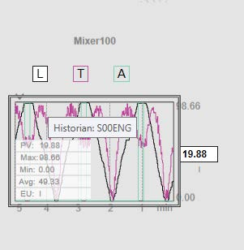
Module 10 – Trends
AVEVA™ Training
Create Symbol
First, you will create and configure a symbol within the $Mixer template.
1.
On the Templates tab, in the Training \ Project toolset, double-click $Mixer to open it in the
Object Editor.
2.
In the Content pane, click Add to add a symbol and name it RealTimeTrend.
3.
Double-click RealTimeTrend to open it in the Graphic Editor.
4.
On the Toolbox tab, enter a search string to find the SA_Trend_MultiPen symbol and drag it
to the drawing canvas.
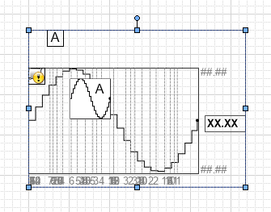
Lab 21 – Adding Trending to Graphics
AVEVA™ Operations Management Interface 2023
5.
On the Properties tab, configure properties as follows:
6.
Right-click the symbol on the drawing canvas and select Custom Properties.
The Edit Custom Properties dialog box appears.
Wizard Options \ PenCount:
3Pens
Wizard Options \ Label:
True
Wizard Options \ LabelType:
ObjectName
Wizard Options \ SymbolMode:
Advanced
Wizard Options \ EngUnits:
True
Wizard Options \ Floating Tooltip:
True
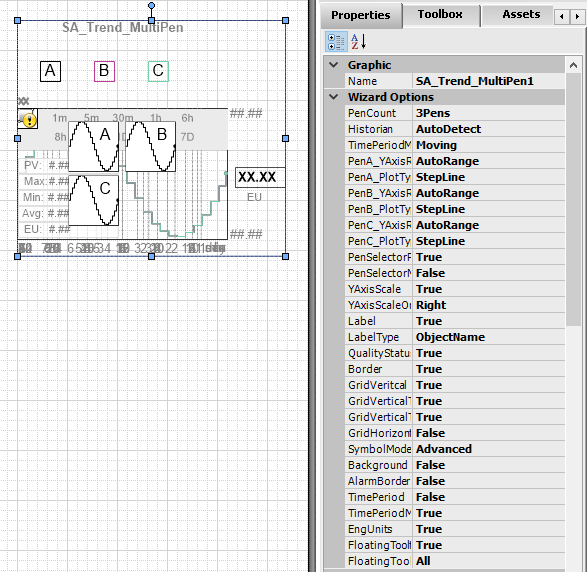
Module 10 – Trends
AVEVA™ Training
7.
Configure custom properties as follows:
8.
Click OK to close the Edit Custom Properties dialog box.
9.
Right-click the symbol and select Substitute | Substitute Strings.
The Substitute Strings dialog box appears.
Name
Default Value
PenA:
Me.Level.PV
PenA_EngUnits:
Me.Level.PV.EngUnits
PenA_Tagname: (switch to reference mode)
Me.Level.PV.Description
PenB:
Me.Temperature.PV
PenB_EngUnits:
Me.Temperature.PV.EngUnits
PenB_Tagname: (switch to reference mode)
Me.Temperature.PV.Description
PenC:
Me.Agitator.Speed.PV
PenC_EngUnits:
Me.Agitator.Speed.PV.EngUnits
PenC_Tagname: (switch to reference mode)
Me.Agitator.Speed.PV.Description
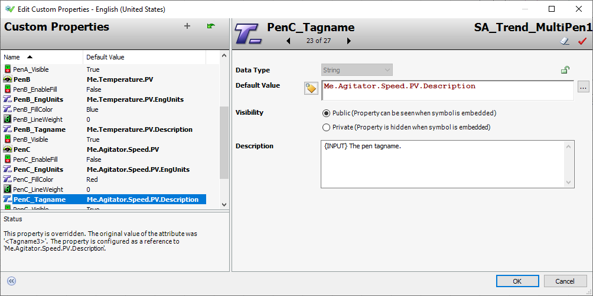
Lab 21 – Adding Trending to Graphics
AVEVA™ Operations Management Interface 2023
10. In the New column, replace strings as shown below.
For the purposes of this lab, the L stands for level, the T is for temperature, and the A is for
agitator speed.
Replace only the A, B, and C strings. Do not perform a “replace all” operation.
11. Click OK to close the Substitute Strings dialog box.
Notice the updated strings in the symbol.
Old
New
A
L
B
T
C
A
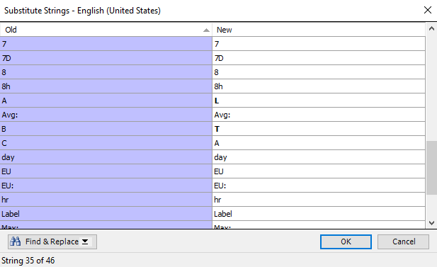
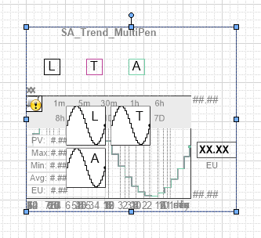
Module 10 – Trends
AVEVA™ Training
12. Click the drawing canvas, and on the Properties tab, change the Graphic \ Size property to
Fixed.
13. Resize the canvas to fit the graphic.
For example, set both Graphic \ FixedWidth and Graphic \ FixedHeight to 320.
14. Arrange the symbol in the center of the canvas and ensure all visual elements are within the
fixed area.
The graphic should look similar to the following.
15. Click the drawing canvas, and on the Properties tab, configure Runtime Behavior \
ContentType as Real Time Trend.
16. Save and close the RealTimeTrend symbol.
17. Save and close the $Mixer template, and check it in.
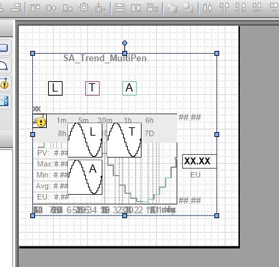
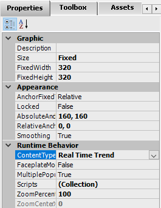
Lab 21 – Adding Trending to Graphics
AVEVA™ Operations Management Interface 2023
Update the Asset Layout
18. On the Graphics tab, in the Training \ Layouts toolset, double-click Asset_Layout to open it
in the Layout Editor.
19. Select Pane2.
20. Click the Add new pane right-arrow to add a pane to the right of Pane2.
A new pane named Pane5 is added.
21. Select Pane5 and configure its properties:
22. Save and close Asset_Layout, and check it in.
General \ Content Type(s):
Real Time Trend
Size \ Width:
300
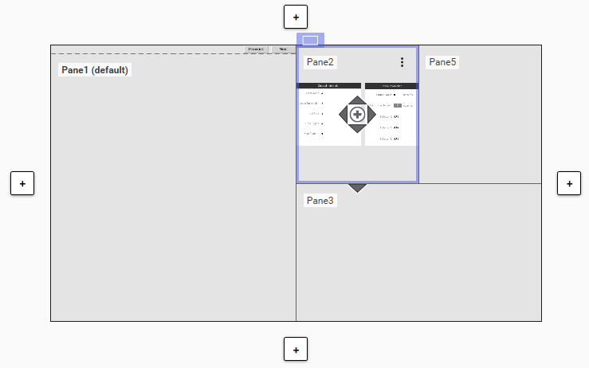
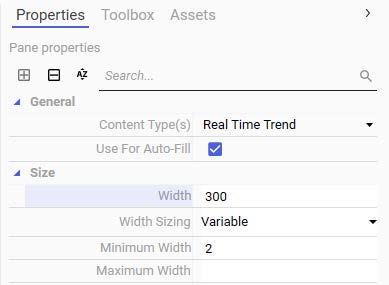
Module 10 – Trends
AVEVA™ Training
Test the ViewApp in a Preview Session
Now you will test your changes in the ViewApp preview session.
23. Switch to the ViewApp preview session.
Notice that
24. Navigate to Mixer100.
Notice that the RealTimeTrend graphic displays in the top-right pane.
25. Above the trend, in the legend, click L to select the pen for level.
You must select a pen to view floating tooltip.
Moving your mouse over the trend will display a floating tooltip, which includes PV, Max, Min,
Avg, and EU information for the currently selected trend pen.
The formula for the Avg value is (Max + Min) / 2, and not a moving average.
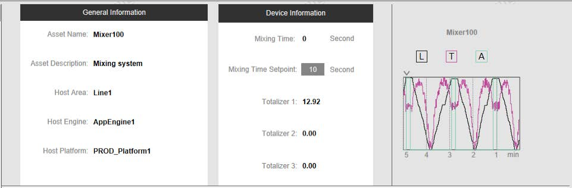
Lab 21 – Adding Trending to Graphics
AVEVA™ Operations Management Interface 2023
You can also click the arrow at the top of the trend chart to select a different duration for the
trend.
The following example indicates the current duration for the trend is 5m (5 minutes).
26. When you are finished testing, minimize the preview session.
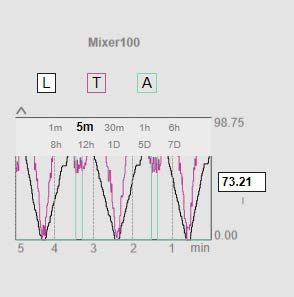
Module 10 – Trends
AVEVA™ Training
Review above.